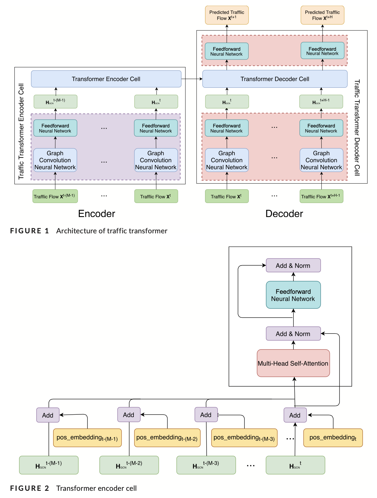
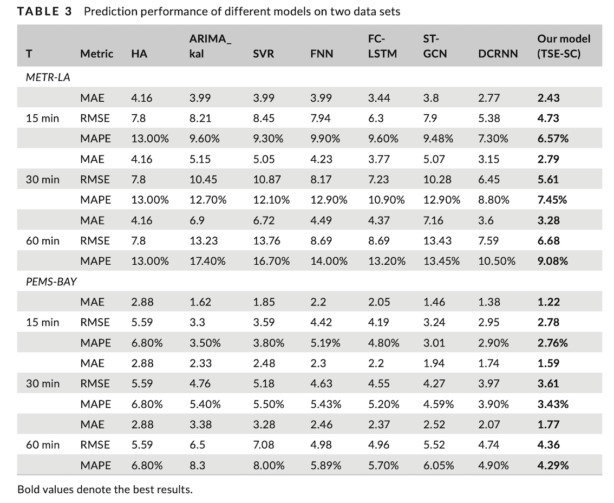
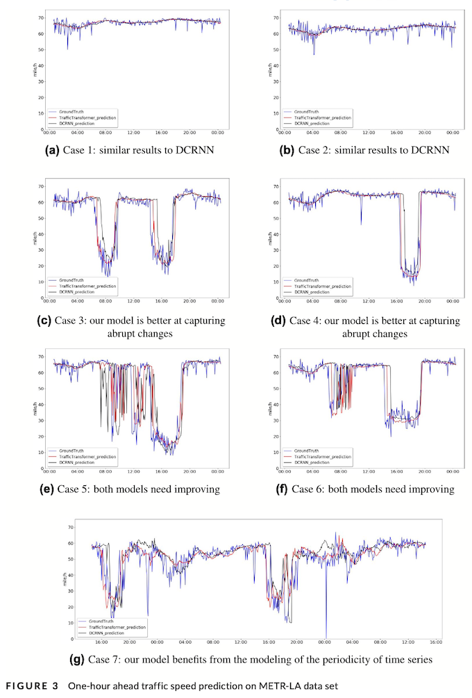

Abstract
Traffic forecasting is a challenging problem due to the complexity of jointly modeling spatio-temporal dependencies at different scales. Recently, several hybrid deep learning models have been developed to capture such dependencies. These approaches typically utilize convolutional neural networks or graph neural networks (GNNs) to model spatial dependency and leverage recurrent neural networks (RNNs) to learn temporal dependency. However, RNNs are only able to capture sequential information in the time series, while being incapable of modeling their periodicity (e.g., weekly patterns). Moreover, RNNs are difficult to parallelize, making training and prediction less efficient. In this work we propose a novel deep learning architecture called Traffic Transformer to capture the continuity and periodicity of time series and to model spatial dependency. Our work takes inspiration from Google’s Transformer framework for machine translation. We conduct extensive experiments on two real-world traffic data sets, and the results demonstrate that our model outperforms baseline models by a substantial margin.
文章分析
引言
交通预测是指通过分析历史交通状况和模式，估计未来的交通状况(如车辆密度和速度)，从而预测未来的事件(如拥堵或旅行时间)。高精度的预测可以为决策者提供指导，为市民提供安全和便利，并减少环境影响。
然而，由于不同尺度的交通状况的时空依赖性建模的复杂性，交通预测具有挑战性（Davis，Raina，& Jagannathan，2019；Wu，Tan，Qin，Ran，& Jiang，2018）。例如，一条道路的交通流量既受其历史交通状况的影响，也受上游道路状况的影响。由于海量交通数据、高性能计算和新型深度学习模型的不断增加，最近的工作推动了用于精确交通预测的时空依赖模型的工作。
基于递归神经网络（RNNs）的模型，如门控递归单元（GRU）和长短期记忆（LSTM），可以有效地用于捕捉时间依赖性（Cui等，2018；Jin等，2018）。例如，Shi等(2015)提出了一个用于交通预测的卷积LSTM模型，其中每个时间步的交通流被递归地输入到LSTM架构中。同样，Li，Yu，Shahabi和Liu（2017）提出了一个卷积RNN模型，其中使用图扩散卷积运算符来模拟空间依赖性，并采用GRU代替LSTM来捕获时间依赖性。
虽然这些基于RNN的模型可以捕捉到时间上的顺序依赖性，但RNN有几个固有的缺陷。首先，它们难以保存非常长期的序列信息，这导致了时间序列在前进路径中失去长期的时间依赖性（Khandelwal，He，Qi，& Jurafsky，2018）。其次，RNNs无法捕捉时间序列的周期性，因为它们对时间序列中的不同时间步长一视同仁。这是一个重要的缺陷，因为时间序列通常传达周期性模式，如每小时、每天、每周和季节性（Guo，Lin，Feng，Song，& Wan，2019；Yao等人，2019）。第三，RNNs难以并行化，使得训练和预测过程的效率降低。
最近，研究人员引入Transformer架构来取代RNNs进行机器翻译（Vaswani等人，2017）。它取代了卷积神经网络（CNNs）和RNNs，完全基于注意力机制上对序列数据进行建模。因此，Transformer不需要递归地输入顺序数据。这使得该架构在计算上比RNNs更高效。更重要的是，为了在对序列建模时保留序列中元素的顺序（如句子中单词的顺序），Transformer引入了一种位置编码策略。它对序列（如句子）中元素（如词）的位置进行编码，首先按位置进行索引，然后将索引传入一系列正弦函数。Transformer及其变体在自然语言处理中取得了巨大的成功，包括机器翻译和文本生成（Dai等人，2019；Devlin，Chang，Lee，& Toutanova，2018；Radford，Narasimhan，Salimans，& Sutskever，2018）。
有趣的是，机器翻译和流量预测在结构上有一些相似之处。在机器翻译中（Wu等，2016），目的是通过使用序列到序列的学习框架（Sutskever，Vinyals，& Le，2014），将一种语言书写的源句翻译成另一种语言的目标句，其中源序列和目标序列都由标记组成。交通预测也可以用类似的方式来制定。更具体地说，任务是利用关于历史交通状况的数据，使其成为未来状况的指示性，其中源序列由过去的一系列交通数据（如交通量、速度）组成，目标序列由未来时间步的一系列交通状况组成。换句话说，源交通序列和目标交通序列中的每个时间步可以类比为机器翻译任务中输入和输出句子中每个词的位置指数。
根据定义，类比是局部的。因此，Transformer不能直接应用于交通预测，原因如下：首先，位置编码策略不适用。在机器翻译和交通预测中，源序列和目标序列的语义是不同的。在机器翻译中，源序列和目标序列代表了不同语言中意义相同的两个句子，因此，两个序列中对应的词应该共享相同的位置索引。相反，在交通预测中，源-目标序列是连续的；因此，源序列和目标序列中的元素之间没有对应关系。相反，交通量预测在对交通量按其时间步长进行索引时，考虑到了时间序列的连续性。此外，交通数据还具有时间的其他一些特性，如周期性。例如，周三下午3点某条道路的交通状况与周四同一时间的交通状况相似。在对Transformer进行调整以适应这一领域时，也应考虑交通数据的周期性特征。因此，这就需要在Transformer架构中采用新的方式来编码时间特征。其次，Transformer只能处理机器翻译中源序列和目标序列之间的顺序依赖性，而交通数据中的空间（网络信息）和时间（顺序信息）依赖性非常突出（Cui，Henrickson，Ke，& Wang，2019；Ma等人，2017）。因此，我们需要使Transformer能够连贯地处理空间和时间依赖性。
为了解决这些问题，我们提出设计不同的时间信息编码策略，使交通数据的连续性和周期性都能得到保留，并借助图卷积网络(GCNs)将Transformer扩展到对时间和空间依赖性共同建模。我们研究的主要贡献如下：
- 我们设计了四种新颖的位置编码策略，对时间序列的连续性和周期性进行编码，以方便对交通数据的时间依赖性进行建模。通过对不同的策略进行组合，我们共提出了7种时间编码方法。
- 我们引入了一种名为Traffic Transformer的混合编码器-解码器架构，以端到端训练的方式对交通数据的空间依赖性和时间依赖性进行连贯建模，其中Transformer被用来对时间依赖性进行建模，GCNs则有助于空间依赖性的建模。
- 在两个真实世界基准数据集上的实验结果显示了我们的模型与最先进的方法相比的性能，证明了我们的时间编码方法和混合架构的有效性。
本文其余部分的结构如下。第2节回顾了现有的交通预测工作。第3节定义了交通预测任务并介绍了Transformer。第4节介绍了编码时间特征的不同策略以及所提出的交通预测架构。第5节解释了我们的实验并介绍了结果。最后，第6节总结了我们的工作，并指出了未来研究的方向。
相关工作
在大数据的驱动下，用于交通预测的机器学习模型几年来引起了学术界和工业界的极大关注（Dai等，2019；Liu，Zheng，Chawla，Yuan，& Xing，2011；Lv，Duan，Kang，Li，& Wang，2014；Yao等，2019；Zhao等，2019）。在深度学习方面，Huang、Song、Hong和Xie（2014）是最早将深度学习模型应用于交通预测的人之一，他们设计了一个无监督特征学习的深度信念网络，然后将这些特征通过回归层进行交通预测。此后，由于RNNs能够通过自循环记忆时间序列中的时间依赖性，大多数用于交通预测的深度学习模型都是利用RNNs建立的。Fu，Zhang和Li（2016）比较了不同的RNN模型，即LSTM和GRU，发现GRU在预测交通方面取得了比LSTM更好的性能。然而，这些方法仅限于捕捉前向时间依赖性。相比之下，Cui等（2018）提出了一种深度堆叠的双向和单向LSTM架构，它能够同时捕获时间序列中的前向和后向依赖性。
虽然上述模型考虑了交通数据中的时间依赖性，但空间相关性往往被忽视。为了填补这一空白，Lv等(2014)提出了一种新型的深度学习架构，内在地考虑了时间和空间的依赖性，其中首先引入了自动编码器作为学习潜伏特征的构件。Zhang，Zheng，Qi，Li和Yi（2016）设计了一个深度学习模型，该模型既考虑了时间方面（时间上的紧密性、周期和人群流量的趋势），也考虑了空间上的接近性。最近，由于CNN和图神经网络（GNNs）在捕捉图像、视频和图形中的空间和拓扑依赖性方面取得了进展，它们已成为检测模式中应用最广泛的模型（Ke，Zheng，Yang，& Chen，2017；Li等，2017；Wu等，2018；Yu等，2017）。除了捕捉时间特征的GRU外，Cao等（2017）还将全网流量矩阵转换为图像，之后施加CNN来学习转换后图像中的全局空间交互。Wu等人（2018）通过将CNN与LSTM架构相婚配，提出了一个混合深度学习框架，其中利用一维CNN对空间依赖性进行建模，利用两个LSTM来学习时间模式。考虑到图是对路网更合适的抽象，Li等（2017）建议用GCNs代替CNN以提取空间依赖性，并提出了一种新的模型，称为DCRNN，其中空间依赖性被建模为一个扩散过程。同样，Cui等人（2019）定义了另一个图卷积算子，结合了邻接矩阵和自由流可达矩阵来捕捉局部空间特征。更一般而言，未来似乎在于将CNN/GCNs与RNNs结合起来，以提取空间和时间依赖性，用于交通预测。然而，这种架构的一个局限性来自于RNNs本身，众所周知，RNNs在训练过程中的计算成本很高。
为了规避RNNs的固有缺陷，研究人员开始研究非循环模型。例如，Yu，Yin和Zhu（2018）提出了一个完全由时空卷积块组成的通用框架。实验表明，这个模型比Li等人（2017）提出的模型产生了更好的结果。Guo等（2019）设计了一个时空注意力机制以及时空卷积模块，以捕捉交通数据的时空依赖性。但是，这种方法仅仅依靠时空注意力机制对过去的交通量赋予不同的重要性，这样做忽略了最近的交通状况对预测当前交通量应该有较大的影响。
最近，Transformer(Vaswani等人，2017)作为深度学习中的一种新架构被开发出来，它采用注意力机制与位置编码策略进行序列建模。鉴于此，已经有一些尝试将Transformer定制为时间序列预测（Li等人，2019；Li & Moura，2019；Lim，Arik，Loeff，& Pfister，2019）。例如，Li等人（2019）认为，基本的Transformer架构对局部上下文不敏感，并建议添加卷积自注意层来改进它。虽然这项工作已经被证明在捕捉长期时间依赖性方面是有效的，但对于全网流量预测来说是不够的。首先，它忽略了路网的空间依赖性，因此未能模拟时空相关性。其次，它以将非常长的序列(如768)输入模型为代价来捕获周期性模式，这对于全网交通预测来说可能是不可能的。网络中的交通数据量远远大于单个点的数据量，因为在一个道路网络上有数百个传感器频繁地报告交通情况。Li和Moura（2019）也借鉴了Transformer的思想来应对时间序列问题，并提出了一种名为Forecaster的新方法来解决出租车乘车需求预测问题。不过，他们的重点是如何在空间依赖图的指导下，利用稀疏线性层更好地对空间依赖性进行建模。与我们的工作最为相似的是Xu等人（2020），他们也专注于通过充分利用Transformer来解决交通预测任务，联合建模空间和时间依赖性。在他们的论文中，他们提出了位置嵌入作为可学习参数，在训练时自动学习。因此，模型本身负责捕捉时间序列中的时间依赖性，而人类对时间序列中的时间模式的知晓度(例如，时间序列的连续性/周期性)被忽略。相比之下，在本文中，我们研究如何通过明确建模时间序列中反映的时间模式来设计不同的时间编码策略。通过这样做，人类先前关于时间模式的知识被视为归纳偏差，以指导模型捕捉时间依赖性。综上所述，在我们的文章中，我们专注于明确地将空间和时间依赖性一起建模：网络中流量的空间相关性以及时间序列的连续性和周期性。
方法
Traffic transformer架构

实验
在本节中，我们报告了我们为评估所提出的架构的性能而进行的实验。
数据集描述
采用两组真实世界的基准数据进行评估。分别是来自洛杉矶县高速公路的环形检测器的METR-LA（Li等，2017）和加州交通机构绩效测量系统（PeMS）。两个数据集均按时间升序（从过去到现在）进行排序，分为训练（70%）、验证（10%）和测试（20%）三部分。Z-score归一化与训练数据的平均值和标准推导应用于这三个集子。为了保留与基线的可比性，我们使用Li等人（2017）构建的两个数据集的传感器图。表2提供了每个数据集的基本描述。
实现细节
为了测试不同编码方法的性能，我们将历史中的序列长度M和预测序列的长度H设为12。对于时间序列分段法，捕捉周周期模式的天数w和日周期模式的天数d为1。在我们的模型中，所有层的隐藏维度为64。使用两个编码器和解码器单元，利用一个图卷积层。我们使用开源代码来实现这整个架构（https://github.com/tensorflow/models/tree/master/official/ transformer）。此外，如4.3节所述，预测序列在预测时是未知的，但在训练时是已知的。因此，这两个过程之间存在差异，这导致了沿着屈服序列的快速错误积累- tion（Bengio，Vinyals，Jaitly，& Shazeer，2015）。为了解决这个问题，我们在模型中也采用了预定采样来弥合这种差异，更多细节请参见Bengio等人（2015）。
实验结果


结论
在这项研究中，我们已经引入了新颖的非循环式架构，称为Traffic Transformer。我们已经成功地将其用于交通预测，以捕获时空依赖性。这个架构可以看作是自然语言处理中一个著名的顺序模型Transformer的扩展。为了探索如何在Transformer中捕获时空依赖性，我们提出了七种不同的时间序列的连续性和周期性建模方法。时间序列分段法取得了最好的效果。另外，我们在Transformer中引入了图卷积神经网络，用于建模交通的空间依赖性。通过这样做，可以捕捉到流量的动态时空特征。在两个基准数据集上的广泛实验表明，我们的模型优于基线，展示了我们提出的时空编码方法和我们提出的整体架构的有效性。本文的一个局限性是，我们只考虑了时间上的注意力机制，而不同时间的上游道路可能会有不同的贡献。在未来的工作中，我们将探索如何设计时空注意力机制，以更精细地解决这个问题。